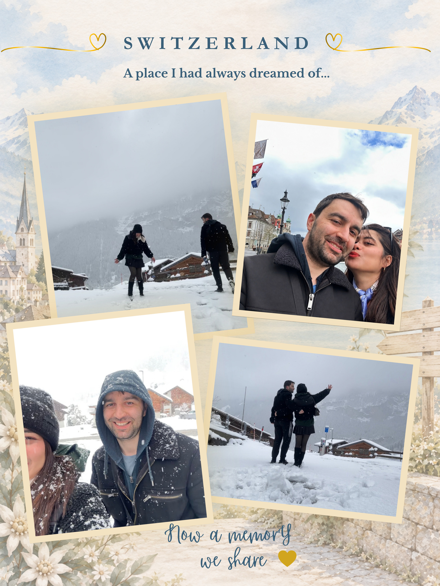
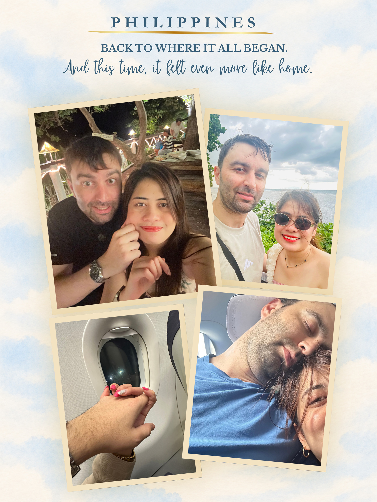
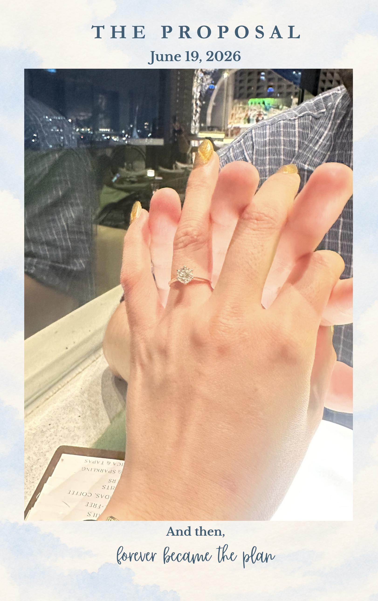

Tap to Open
JANUARY 27, 2027
Wednesday · 3:00 PM
You’re Invited
The Bride
Marlyn N. Napili
Sixth of Seven Siblings
I grew up in a home where faith, respect, and family were always at the center of everything. My parents were lovingly strict, but today, I look back on those years with nothing but gratitude. I have never regretted having strict parents. Every lesson they taught me, every sacrifice they made, and every value they instilled helped shape the woman I am today.
My Parents
Catalino Pererras Napili
Father
Marcy Nidea Napili
Mother
The Groom

Tihomir D. Yanev
Eldest of Two Siblings
Raised in Bulgaria by a loving and supportive family, Tihomir grew up learning the quiet responsibilities that come with being an older brother—patience, understanding, and caring for the people around him. His quiet strength, kindness, and unwavering support are just some of the many reasons I fell in love with him.
Through him, I’ve also come to experience the warmth of Bulgarian hospitality, the kindness of his family, and the traditions that shaped the man he is today. I’m grateful not only to be marrying the man I love, but also to be welcomed into the family that raised him.
His Parents
Dimitar Todorov Yanev
Father
Maya Dimitrova Yaneva
Mother
The Moments Between
Our First Meeting







Different Maps. Different Cultures. One Family.
Although we were raised on opposite sides of the world, love has a beautiful way of bringing people together.
The greatest gift is having the people we love gathered in one place as we begin our forever.
Where We Will Say “I Do”
Wedding Ceremony

Daraga Church — Our Lady of the Gate Parish
Daraga, Albay, Philippines
Ceremony Begins
3:00 PM
A Note for Our Guests
We kindly invite you to arrive 30 minutes before the ceremony to allow ample time for parking, seating, and to ensure everyone is comfortably settled before the bridal procession begins.
Where We’ll Celebrate Together
Reception
New Blossoms Events Place
Tagas, Daraga, Albay, Philippines
A Small Note
We invite you to stay and celebrate with us as we enjoy an evening filled with laughter, heartfelt moments, delicious food, and unforgettable memories.
Those Beside Us
A wedding is made even more meaningful by the people who stand beside us. We are deeply grateful for their love, guidance, friendship, and unwavering support as we begin this new chapter together.
Principal Sponsors
Best Man & Maid of Honor
To Light Our Path
To Clothe Us Together
To Bind Us as One
Groomsmen & Bridesmaids
Ring, Bible & Coin Bearers / Flowergirls
To each of you who will stand beside us, thank you for being part of our story and for walking with us as we begin our forever.
Dress to Celebrate With Us
Your presence is what matters most. We invite you to complement the atmosphere we’ve envisioned by choosing your attire from the colors in our suggested palette below.
Principal Sponsors
As one of our Principal Sponsors, we kindly invite you to wear Barong Tagalog for gentlemen and Long Formal Gown for ladies, in Beige or Champagne.
Guests
Casual

Semi-Formal


Wedding Palette
We invite you to celebrate with us in semi-formal or casual attire, inspired by the timeless elegance of our wedding palette.
Kindly Avoid
To allow the bride and wedding party to stand out, we kindly ask our guests to refrain from wearing:
A Gift From the Heart
A Note From Us
Your love, prayers, and presence on our wedding day are the greatest gifts we could ever ask for. As we begin this new chapter together, we will also be starting our married life in Europe, where we look forward to building our first home and creating a lifetime of memories together.
Should you wish to bless us with a wedding gift, we would be sincerely grateful for a monetary gift to help us build our future together. Your kindness and generosity will become part of the foundation of the life we are about to begin.
Above all, your presence on our special day is what means the most to us, and we are truly thankful to celebrate this milestone with you.
Bank Transfer
Account Name: Marlyn Napili
Bank Name: Banco De Oro
Account Number: 004630459939
GCash
Mobile Number: 09064368115

A few helpful notes to make your experience as smooth and enjoyable as possible.
Our story wouldn’t be complete without you.
We hope you’ll join us as we begin our forever.
Will You Celebrate With Us?
Whether you’re traveling from across the world or just across town, your presence would mean the world to us. We kindly ask that you let us know if you’ll be joining us as we celebrate the beginning of our forever.
Please enter your name.
Please let us know if you’ll be joining us.
Thank You!
Thank you for saying “yes” to celebrating with us.
Thank you for taking the time to experience our story. We look forward to creating new memories with all those who have been part of our journey.
With love,
Marlyn & Tihomir ❤️
The Countdown
Every sunrise brings us one day closer…
Until We Say “I DO”
“I have found the one whom my soul loves”
Song of Solomon 3:4
Every love story begins
with a simple “yes.”
See you on
January 27, 2027.